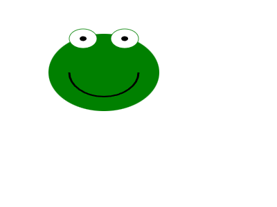
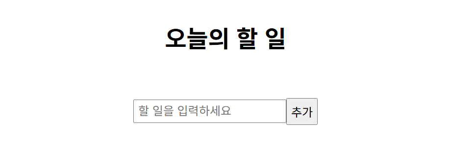
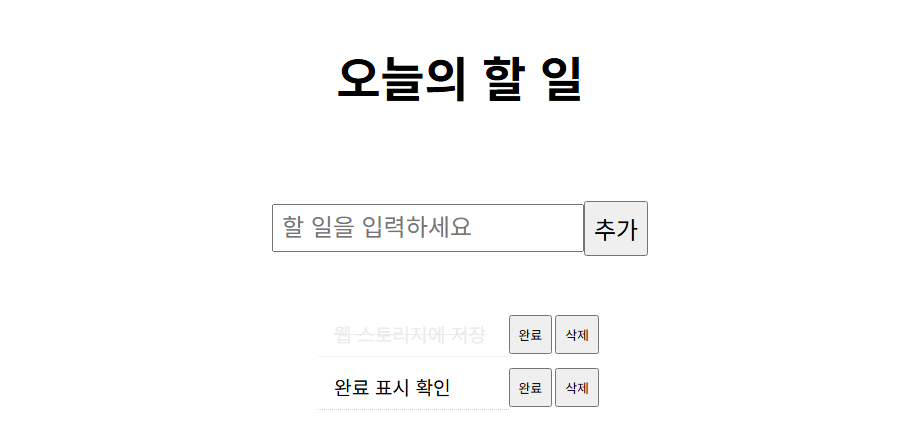

PROJ_03 · 완료 2025년 5월 22일 오후 2:59
오늘의 할 일
Do it! 모던 자바스크립트의 정석 폴더 「웹스토리지로 todolist 구현하기」로 만든 정적 페이지입니다. 입력한 할 일을 브라우저 localStorage에 저장하고, 완료와 삭제를 버튼으로 처리합니다. 아래 화면은 2026년 10월 17일에 todo-result.html을 브라우저에서 연 것입니다.
추가 학습 자료
PROJ_03_add_doc의 유튜브 강의 요약과 캔버스 그림입니다. 강의 본문은 옮기지 않고, 문서에 적힌 범위만 모았습니다.
-
강의 요약
첫째 마당부터 셋째 마당입니다. 변수와 제어문, DOM, 내장 객체와 사용자 정의 객체를 다룹니다. 문서 앞부분에는 책의 여섯 마당 구성도 적혀 있습니다.
-
캔버스
검은 바탕에 초록 개구리 얼굴을 그린 그림입니다. 다섯째 마당의 캔버스 실습으로 남긴 화면입니다.
- 요약 모던자바스크립트 유튜브 강의 요약 using AI 뤼튼.docx, 같은 이름의 pdf
- 그림 캔버스로 그린 개구리그림.png
캔버스 그림

실행 화면
2026년 10월 17일, todo-result.html을 브라우저에서 열어 찍었습니다. 목록이 있는 화면은 확인용으로 두 항목을 넣고, 첫 항목의 완료를 누른 상태입니다.


간단 설명
페이지가 열리면 localStorage의 todos 배열을 읽어 목록을 다시 그립니다. 추가를 누르면 입력값을 목록과 저장소에 넣고 입력칸을 비웁니다. 삭제는 화면과 저장소에서 같은 문장을 뺍니다.
완료는 글자에 completed 클래스를 붙였다 떼는 동작입니다. 취소선과 흐린 색은 CSS에 있고, 그 상태는 저장소에 기록되지 않습니다. 새로고침하면 문장만 돌아오고 취소선은 사라집니다.
사용 도구
-
HTML
제목, 할 일 입력 폼, 목록을 담을 ul이 있습니다.
-
CSS
폼과 항목을 가운데로 모으고, 완료된 글자에 취소선과 흐린 색을 줍니다.
-
JavaScript
todo-result.js가 추가, 완료, 삭제와 저장소 읽기·쓰기를 담당합니다.
-
localStorage
할 일 문장을 JSON 배열로 브라우저에 남깁니다. 서버는 쓰지 않습니다.
-
Canvas
학습 자료의 개구리 그림은 캔버스로 그린 화면입니다. 할 일 페이지 소스에는 캔버스가 없습니다.
-
뤼튼
유튜브 강의 요약을 정리할 때 뤼튼을 사용했습니다.
실행 환경
핵심 기능
| 기능 | 하는 일 |
|---|---|
| 추가 | 입력값을 목록에 넣고 todos 배열 끝에 저장한 뒤 입력칸을 비웁니다. |
| 완료 | 해당 글자의 취소선을 켜고 끕니다. 저장소의 문장은 바꾸지 않습니다. |
| 삭제 | 같은 문장을 저장소 배열에서 빼고, 화면의 항목도 지웁니다. |
| 다시 열기 | 페이지를 열 때 저장소의 문장으로 목록을 다시 만듭니다. |
파일에서 이은 기록
- readme 웹스토리지 API로 간단한 TODOLIST 구현하기. 완료일은 2025년 5월 22일 오후 2시 59분입니다.
- 빈 입력 입력칸에는 required가 있습니다. 추가 버튼은 폼 전송을 막고 클릭으로 처리해서, 빈 칸에서도 항목이 하나 생깁니다.
- 완료 상태 취소선은 클래스 토글입니다. 새로고침 뒤에는 저장해 둔 문장만 남습니다.